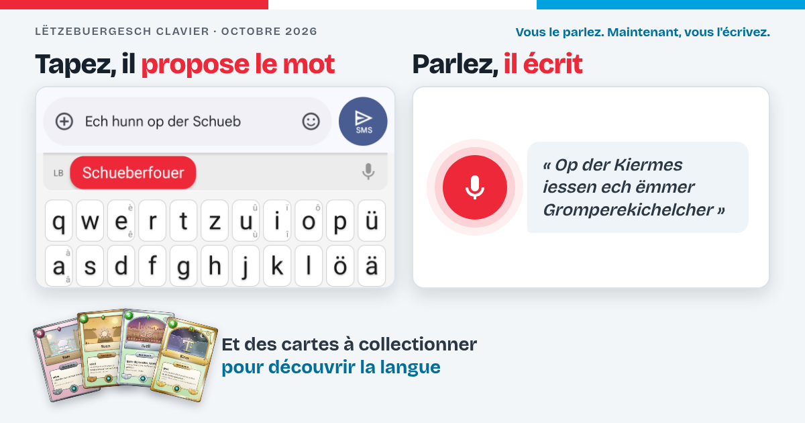

Ce qui change dans le clavier, édition après édition. La plus récente en premier.

La dictée vocale, les fautes de frappe rattrapées, des cartes à collectionner pour découvrir la langue, et le clavier à la taille d'une tablette.
Aussi en English · Deutsch · Português